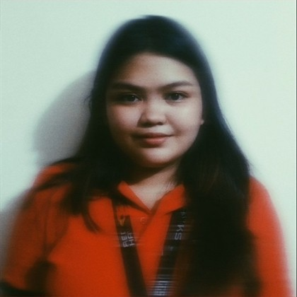

Built by students,
for students.
GoTSUian started as a capstone project by BSIT students at Tarlac State University – San Isidro Campus, built to solve a problem every student here knows: getting a safe, fair, reliable tricycle ride around campus.
A campus problem, solved by the people who live it.
At San Isidro Campus, the tricycle is how most students get to and from Main Campus — yet there is often no certainty about where to catch one, what the fair price should be, or whether the ride is safe.
So four BSIT students set out to build GoTSUian: a simple, transparent, and safe way to book a tricycle ride — from choosing a route to tracking your driver, all in a single tap.
Why "GoTSUian"?
The name carries "TSU" because this platform was built for the TSU community — researched and designed around the real experiences of students and drivers at San Isidro.
Our Mission
To make every trip a TSU student takes to and from campus fast, safe, and fair — no guesswork, no overpricing.
Our Vision
To become the standard way of commuting within TSU San Isidro — recognized by students and TODA drivers alike as a trusted partner.
More than a booking app — a safety-first system.
Every feature was designed around the real concerns of students and drivers.
Verified drivers
Every driver's license, plate, and body number are verified before admin approval.
Live tracking
Watch your tricycle's location in real time, right up until it arrives.
Fair, transparent fares
Solo or Shared — the price is always clear, and it drops as more students join.
Chat & support
Message your driver directly, with a complaint system in place for anything that needs reporting.
The people behind GoTSUian
Built as a capstone project by four BSIT students at Tarlac State University – San Isidro Campus.
Rica Mae Flores
DeveloperKristine Quizon
Mae Kyla Rampas
Team Member
Ryza Mae Torres
Team MemberReady to ride?
Join the TSU students already using GoTSUian every day.